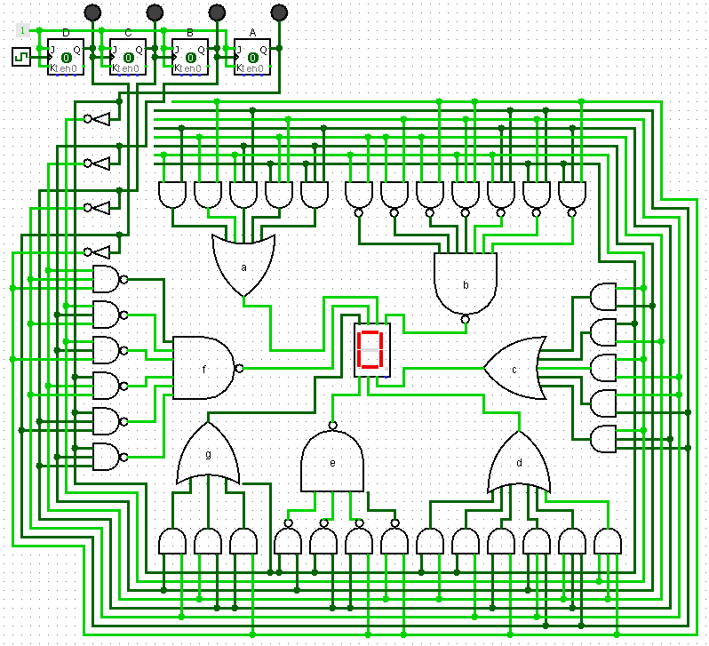

The No-Spaghetti Breadboard: Building a Custom Hexadecimal 7-Segment Decoder
.gif)
Every computer engineering undergrad eventually faces the ultimate test of patience: taking a complex combinational logic circuit from paper to a physical breadboard without it turning into a tangled nest of wires.
For my latest hardware project, I decided to bypass commercial, ready-made decoder ICs and build a custom 4-bit hexadecimal to 7-segment decoder completely from scratch.
The goal? Decode standard 4-bit binary inputs (0000 to 1111) into alphanumeric hexadecimal characters (0-F) on a Common Cathode display, using only standard 7400-series TTL logic gates. Oh, and the wiring had to be absolutely flawless—no diagonals, no overlapping, and strictly flat "Manhattan-style" routing.
Here is a look at how I went from truth tables to a fully functional, PCB-style breadboard array.
Phase 1: The Math and The Maps
You can't build the hardware until the math is perfect. Since I was using a Common Cathode display, the logic needed to be active-HIGH (a 1 turns the segment ON).
I mapped out the desired outputs for segments a through g for all 16 binary states. To keep the hardware footprint as small as possible, I used Karnaugh Maps (K-maps) to simplify the logic into Sum of Products (SOP) equations.
Some segments optimized beautifully. Segment g, for instance, factored out into an elegant mix of basic variables and an Exclusive-OR (XOR) gate. Other segments, like b and f, required massive 6-term and 7-term equations that would put my hardware constraints to the test.
Phase 2: Hardware Constraints & Gate Cascading
In a perfect simulator, you have infinite logic gates of any size. In the real world, you are limited to the ICs sitting on your desk.
My initial design called for dedicated 3-input and 4-input OR and NAND gates. Mid-build, I ran out of them. Instead of waiting for parts, I adapted the circuit to rely heavily on cascading 2-input gates (the 7432 Quad OR and 7400 Quad NAND).
Cascading OR gates is straightforward thanks to associative logic—you just build a tree topology. But cascading NAND gates is a different beast because every gate inverts the signal. To sum six or seven inverted product terms using only 2-input NANDs, I had to strategically route intermediate signals through additional NAND gates acting as inverters to keep the Boolean logic intact. It increased the chip count, but it proved the math was bulletproof.
Phase 3: The "Manhattan" Routing Standard
The most challenging (and rewarding) part of this project was the physical build. I set strict rules for the wiring to ensure the circuit was readable and easy to debug: No overlapping wires. * No diagonal runs. Every bend must be exactly 90 degrees. No "spaghetti." Wires must sit completely flush against the breadboard. To achieve this, I treated the layout like a factory assembly line spread across three linked 830-tie point breadboards: Board 1 (The Input Stage): Houses the DIP switches, Hex Inverters (7404), and basic XOR (7486) / AND (7408) gates to generate the foundational 1-variable and 2-variable terms. Board 2 (The Heavy Processing Stage): Handles the complex 3-variable and 4-variable terms using 7410 and 7420 NAND chips. Board 3 (The Summing Stage): The convergence point. This board holds the cascaded 7432 OR and 7400 NAND gate trees that sum the final equations and push the signals through current-limiting resistors to the display. To adhere to the "no overlap" rule, I left 3-column empty "highways" between the ICs. If a signal needed to cascade to the next gate, it exited the chip, made a 90-degree turn into the highway, traveled down the board, and U-turned back into the next input pin.
The Result
There is nothing quite like flipping a DIP switch to 1110 and watching the display instantly light up with a perfect, bright red E. This project was a deep dive into the realities of digital logic design. It bridged the gap between theoretical Boolean algebra and the physical realities of TTL chip constraints, power distribution, and signal routing.
